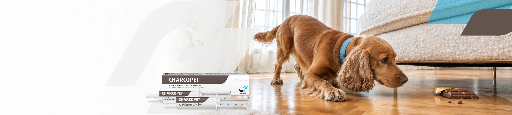
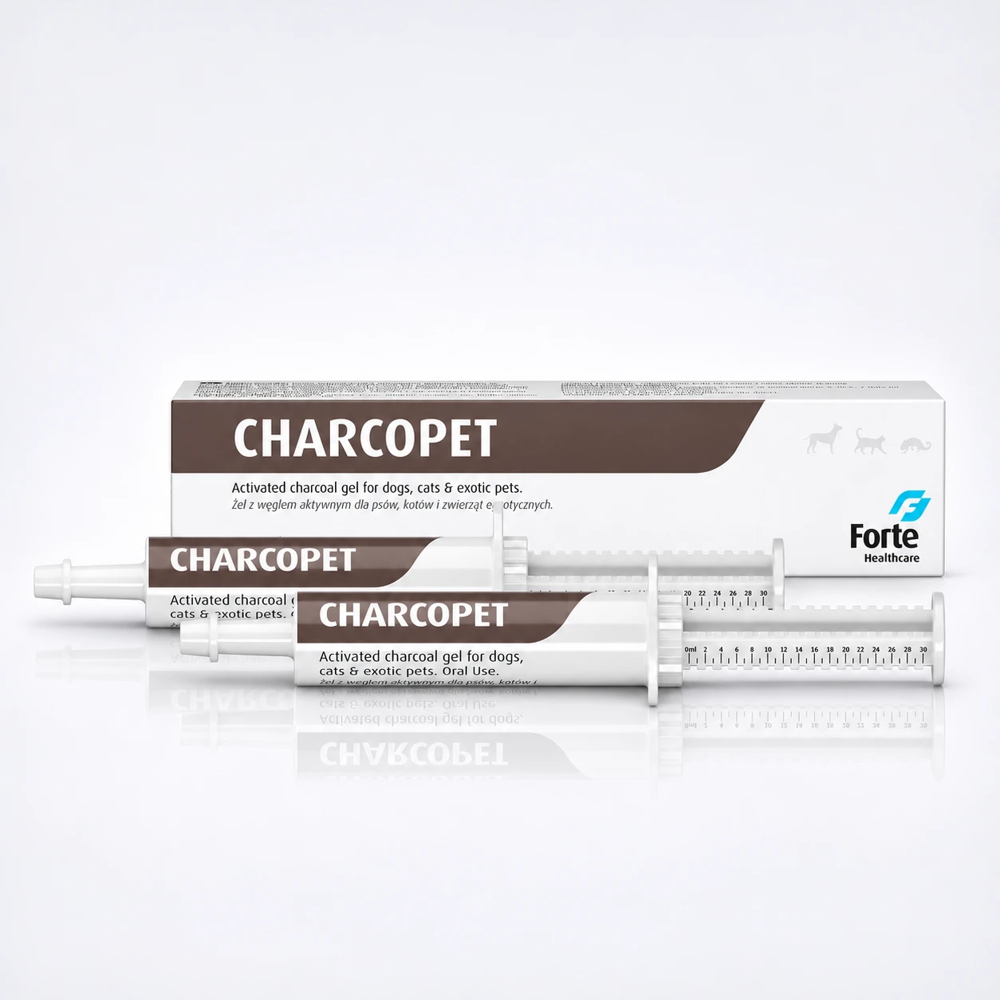

High concentration
50% activated charcoal
With 50% activated charcoal, CharcoPet delivers a high charcoal concentration per ml, minimising the volume of administration and reducing handling stress.

But when it gets them into trouble, how we care for them matters.
50% Activated Charcoal: More Charcoal. Less To Administer.
The product
CharcoPet combines a high activated charcoal concentration with a ready-to-use gel formulation and precision-dosed syringe.
A concentrated formulation designed to deliver a high charcoal content per ml.
A graduated dial-dose syringe for measured oral administration.
Each CharcoPet carton contains two 30ml syringes, providing 60ml in total.

Benefits
50% activated charcoal
With 50% activated charcoal, CharcoPet delivers a high charcoal concentration per ml, minimising the volume of administration and reducing handling stress.
Up to 15kg per syringe
Each syringe provides the right amount for up to 15kg bodyweight. The 30ml syringe is also much more ergonomic than larger syringes.
Seaweed meal
Seaweed meal (Ascophyllum, Gracilaria, Ulva spp.) provides natural polysaccharides that help soothe the gut lining and support recovery.1–3
Dogs & cats
Suitable for dogs and cats.
How to use
2ml/kg bodyweight orally.
Can be repeated every 4–6 hours if clinically required.
Move the slider to the patient’s bodyweight to see the volume of CharcoPet for a single dose.
Volume per dose
30ml
1 full syringe1 carton covers this dose, with one syringe to spare.
For guidance only, calculated at 2ml/kg bodyweight. Dosing and any repeat administration should always be decided by the veterinary surgeon.
FAQ
Dosing, repeat doses, contraindications and administration.
CharcoPet should be administered at a dose rate of 2ml/kg bodyweight. The CharcoPet syringe is graduated with an adjustable dial for ease of dose calculation and prevention of accidental overdose.
Whether or not repeated doses are required depends on the toxin that the pet has ingested. Some toxins only require a one-off dose whereas other toxins undergo entero-hepatic recirculation and so repeated doses are advised (usually every 4–6 hours).
CharcoPet should not be administered orally if the animal has reduced consciousness or swallowing ability. The risk of aspiration should be assessed before oral administration.
CharcoPet may be contraindicated if the patient requires oral antidotes or treatments at the same time, as activated charcoal may cause reduced adsorption of these.
Not all toxins are bound by activated charcoal, e.g. alcohols and xylitol.
Yes, CharcoPet can be administered to puppies and kittens. Extra care should be taken with dosing and administration in young animals.
CharcoPet can be administered directly into the mouth using the easy-to-use syringe. However, CharcoPet can be administered with a small amount of food if necessary. One study has shown that administering activated charcoal with a small amount of food does not reduce its clinical effect.1
There is limited and conflicting evidence regarding the use of a cathartic with activated charcoal. A 2004 position paper stated that in humans the routine use of a cathartic with activated charcoal is not endorsed.2
A 2005 position paper stated that cathartics should never be administered to the poisoned patient (human) with or without the administration of activated charcoal.3
There are very limited studies in animals regarding the use of cathartics in poisoned patients. No studies have proven that using a cathartic with activated charcoal improves patient survival outcomes or reduces systemic toxin levels. One 2015 study concluded that activated charcoal with a cathartic was as effective as multi-dose activated charcoal (without a cathartic) in reducing serum carprofen level in a study in 8 dogs.4
If a cathartic is used in addition to activated charcoal, then care must be taken to ensure only one dose of the cathartic is administered and extra precautions must be taken in patients with dehydration or electrolyte imbalances.
Blog
A short introduction to the first CharcoPet article will appear here once it is published.
A short introduction to the second CharcoPet article will appear here once it is published.